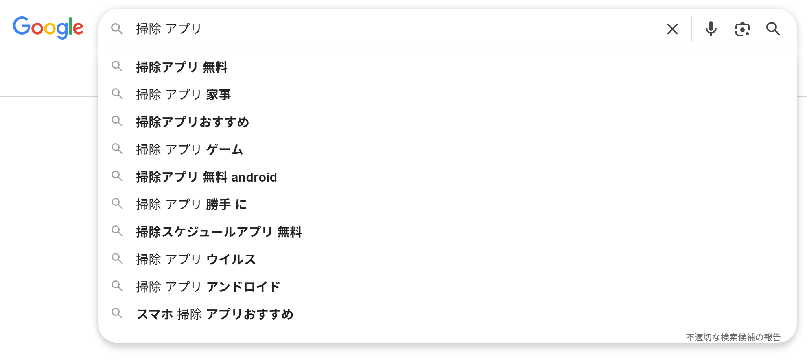

🕒 学習目安 約18分
キーワード戦略
調査：検索キーワード、検索意図、市場調査、設計：トピック設計、分析：競合分析
4 / 8
調査：軸キーワードからのキーワード洗い出し
個別のキーワードを思いつくままに調べるのではなく、サイト全体の市場を俯瞰するには、まず軸キーワードを起点に、関連キーワードを網羅的に広げていく進め方が有効です。
Term / 用語定義
軸キーワード
自社にとって重要かつ関連性が最も高い、検索意図の幅が広い単一のキーワード。例えば掃除機の販売サイトであれば「掃除機」、賃貸不動産サイトであれば「賃貸」が該当します。複数語の組み合わせにすると検索意図が限定されすぎるため、まずは幅広い単語を軸に選びます。
軸キーワードを決めたら、次の2つの方法でキーワードを膨らませます。
- サジェストキーワードの抽出：検索窓にキーワードを入力したときに表示される候補キーワード（オートコンプリート）を収集する方法。「軸キーワード＋あ〜ん」のように五十音を組み合わせて調べると、より多くの候補を取得できます
- 関連キーワードツールの活用：Googleキーワードプランナーなどの広告向けツールを使い、軸キーワードに関連するキーワード群と、その月間検索ボリュームを取得する方法

図：検索窓への入力で表示されるサジェスト（オートコンプリート）の例。ユーザーが実際に検索している複合キーワードを収集できる
このほか、自社サイトの流入キーワード（Search Consoleで確認）、広告のコンバージョンキーワード、Q&Aサイトやクチコミ・SNSでの言及、競合サイトの対策キーワードなども、見落としがちなニーズを発見する手がかりになります。
📝
Note
この段階では、キーワードの精査よりも網羅的に数を集めることを優先します。整理・グルーピングは後の工程で行うため、まずは質より量を意識して洗い出しましょう。